San Carlos
8888 aqui carrusel de los 4turis
es una comisaría, es decir, una pedania del municipio mexicano de Guaymas, en el estado de Sonora. Ubicada 15 km. al norte de la ciudad.
Está ubicada en la costa del Mar de cortes. Rodeado de montañas y playas, este territorio ofrece paisajes únicos. Tiene alrededor de 2,264 habitantes, y entre ellos hay muchos extranjeros, la mayoría estadounidenses y canadienses que viven ahí durante el invierno por su clima favorable. Se pueden practicar diversas actividades como la pesca, el buceo y excursionismo.
San Carlos está a 120 km de hermosillo y a 350 km (4 horas aproximadamente) en automóvil de la frontera de los Estados Unidos por la carretera federal 15
En tiempos vacacionales San Carlos es un punto de reunión principalmente de jóvenes.
El cerro Tetakawi es un emblema de alto valor paisajístico para San Carlos, ahí sobrevivieron los indígenas yaquis y seris; además de que su mística silueta fortaleció el espíritu guerrero y el alma del indio nómada. Su nombre fue puesto por los yaquis, el cual significa “Montaña de Piedra”. Teta (piedra) Kawi (montaña)
En el año 2011 estuvo clasificada dentro de la mejores 10 visitas oceanicas del mundo por National Geographic.
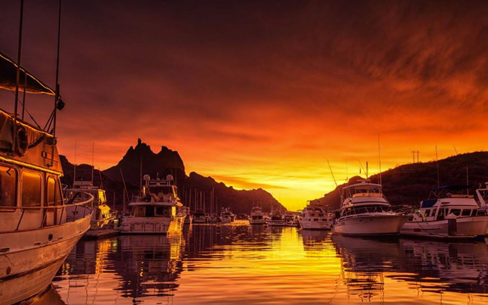
Bahía de Kino es parte del municipio de hermosillo pueblo mexicano perteneciente al municipio de hermosillo ubicado en la región centro-oeste del estado de sonora en la zona del desierto sonorense y en la costa del mar de cortes. El pueblo es la tercera localidad más habitada del municipio, ya que según los datos del censo de Población y Vivienda realizado en 2010 por el instituto nacional por estadistica y geografia (INEGI), Bahía de Kino tiene un total de 6,050 habitantes.
Por su ubicación costera, el pueblo es uno de los destinos turísticos más importantes del estado, por debajo de puerto penasco heroica guaymas y san carlos.
La mayor parte de las actividades económicas que se realizan en Bahía de Kino, ya sea por extracción, explotación o uso directo, dependen de los recursos naturales marinos y costeros. La actividad pesquera contribuye con el 46.35% del producto generado en la comunidad. Después de la pesca, el comercio y los servicios, ocupan el segundo lugar con un 43.54%. El sector industrias y artesanías, a pesar de contribuir solo con el 9.59%, juega un papel medular ya que esta actividad está ampliamente extendida al interior del pueblo. Finalmente el 0.52%, restante lo aportan otras actividades productivas que incluye ganadería y huertos familiares
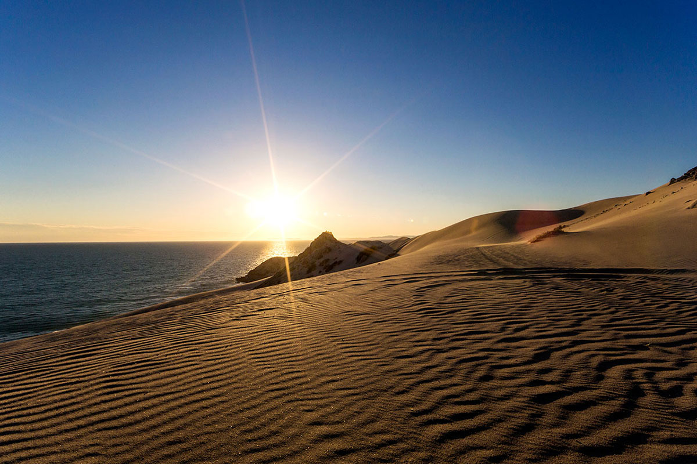
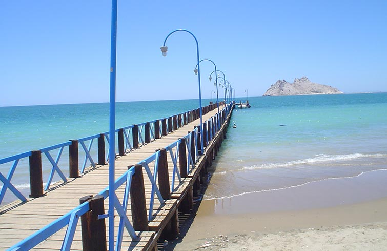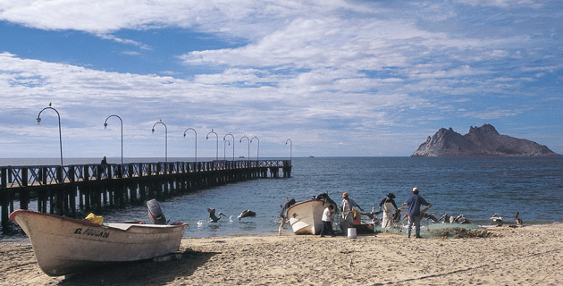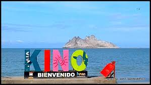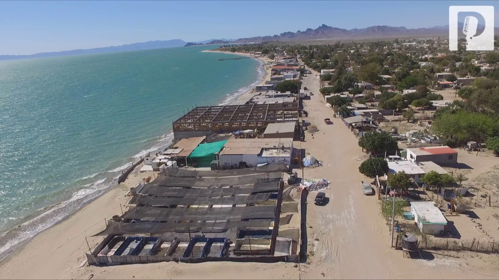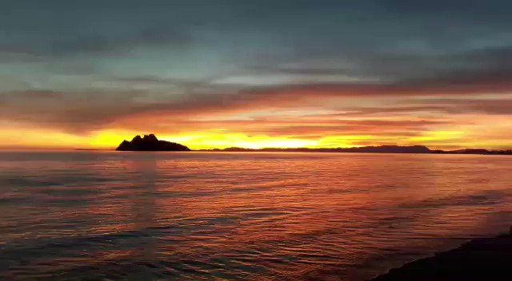
Es una ciudad mexicana ubicada en el noroeste del estado de sonora, en la zona del gran desiero de altar. La ciudad es cabecera del muncipio de puerto penasco y de acuerdo a los datos el último censo de Población y Vivienda realizado en 2010 por el instituto nacional de estadistica y geografia (INEGI), esta cuenta con una población de 56,756 habitantes, lo que la convierte en la novena ciudad mas poblada del estado.Debido a su ubicación en la costa del golfo de california, y la posesión de playas extensas, es uno de los destinos turísticos más importantes del norte de mexico, y es considerado el destino con mayor crecimiento en los últimos años del país. Se ubica a 97 kilómetros de sonoyta en la frontera con estados unidos y a 457.2 kilómetros de hermosillo la capital estatal. La ciudad se encuentra en la pequeña franja de tierra que une a la peninsula de baja california con el resto de mexico.
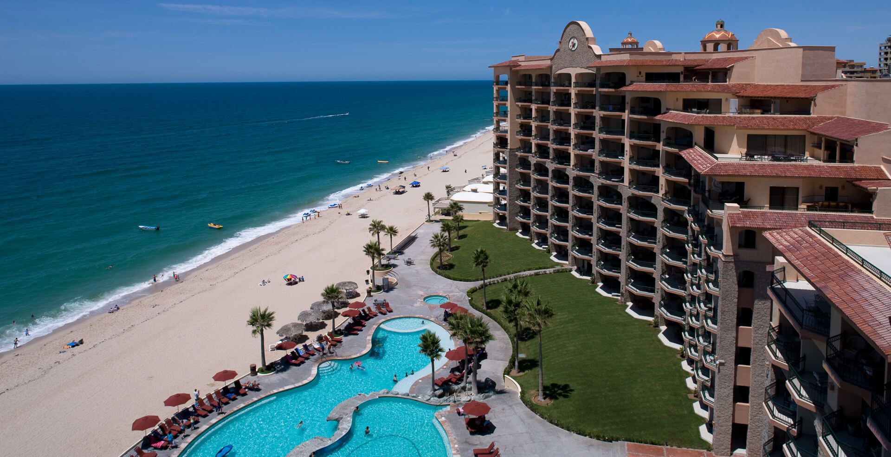
| 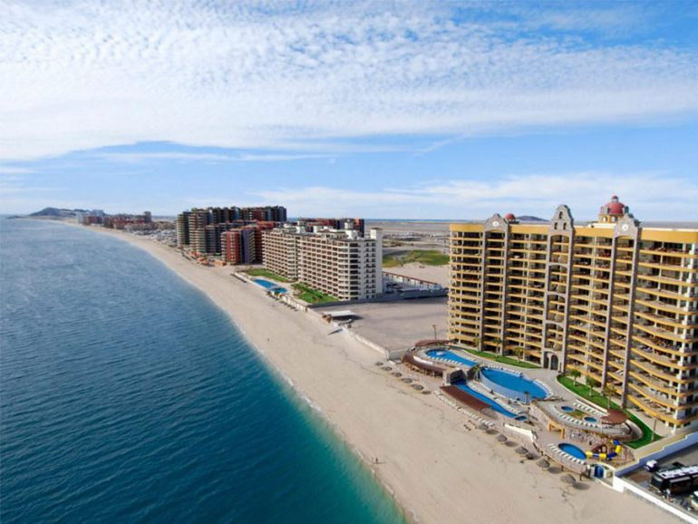 | 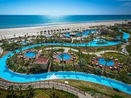 | 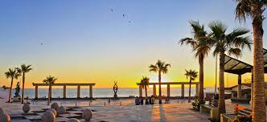 |
| 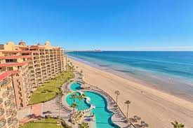 | 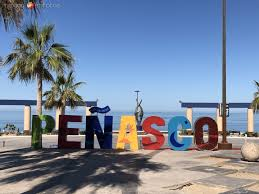 | 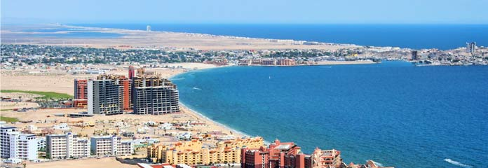 |
| 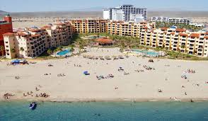 | 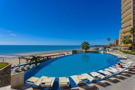 | 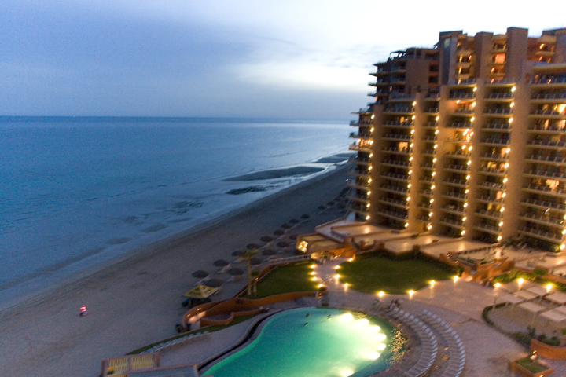 |
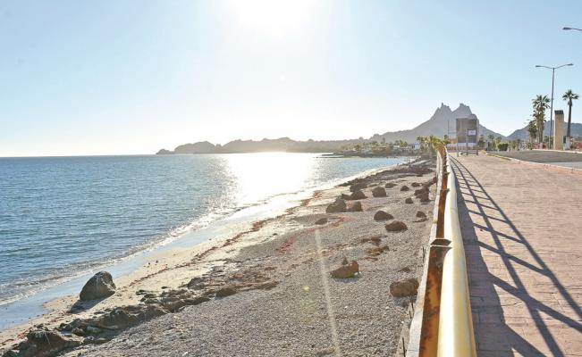 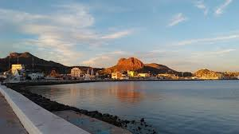
Se ubica 135 kilometros al sur de la capital estatal,Hermosillo, y a 129 kilómetros de ciudad obregon. Es la cabecera municipal del municipio de guaymas, cuenta con una población de 113 082 habitantes, lo que la convierte en la sexta ciudad más poblada de Sonora y en conjunto con empalme constituye la única area metropolitana d sonora.
Toma su nombre de la tribu Guaymas—nombrados por diversos historiadores también como Guaymas,Uayemas, Gueimas, Baymas o Guaymi, fue un pueblo perteneciente a la etnia seri, que habitó junto con los Upanguaymas, en dicho territorio.
Guaymas es uno de los puertos de mexico denominado "de Altura" en la costa del Pacífico mexicano, Es una de las principales ciudades productoras de camarón en el norte de México y anteriormente también fue destacada por su captura de ostras.
Desde sus inicios, Guaymas se destacó por tener una economía fundamentada principalmente en la pesca y otras actividades relacionadas con el mar. Sin embargo, con la paulatina escasez de recursos pesqueros que se ha dado en la región en las últimas décadas y con el incremento de la contaminación marina, el sustento de su economía ha tenido que buscar otras vertientes, hasta el punto de que actualmente gran parte de la actividad laboral guaymense de basa en la industria maquiladora y el turismo.